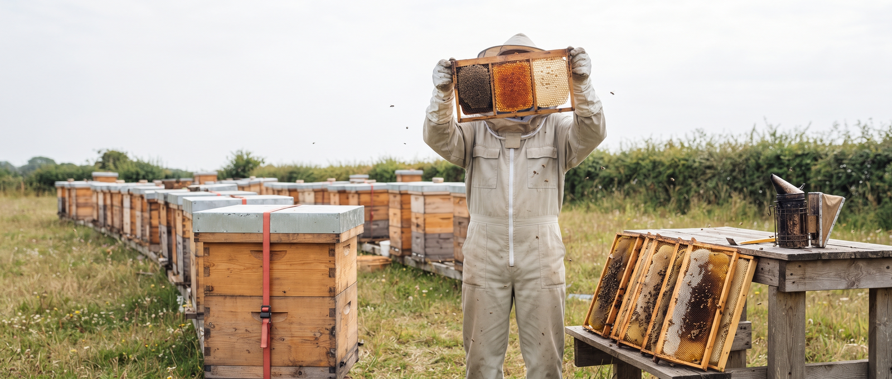

What it does
The tool provides a command-line interface that reads a CSV file and writes a summary report. Run it as the README gives it: python main.py --input INPUT.csv --output REPORT.txt [--verbose]. For example, python main.py --input data.csv --output my-report.txt generates the report in my-report.txt from data.csv. Its one dependency, listed in requirements.txt, is pandas.

Parameters
| Parameter | What the README says |
|---|---|
-h, --help | Show help message and exit |
--input | Path to the input CSV file containing system logs or data to analyze (required) |
--output | Path to the output file where the analysis report will be saved (required) |
--verbose | Enable verbose logging |
Stated limits
Both --input and --output are required for every run: one names the CSV to read, the other names the report file to write. The README states its scope plainly: this tool runs no security checks despite its name. It reads a CSV file and reports a count, nothing more. The analyze-system tool is not a security audit tool and runs no security checks. Its report is a summary of the input CSV only: row count, null values per column, and column data types. It says nothing about the security status of a system. Licensed under the GNU General Public License v3.0.